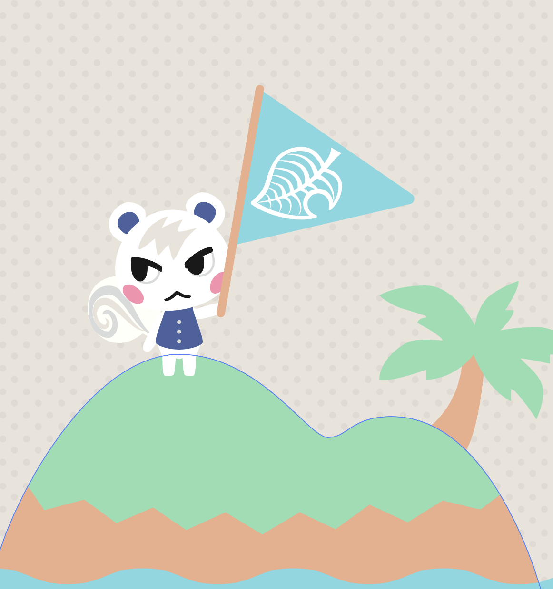

marshal crossing
day: 0
friendship level: 0
restart
Marshal is the newest resident villager to move to your island! It is said that when a villager considers you their bff, they will express it by giving you their framed photo! How long will it take for you and Marshal to become bff's?
start!